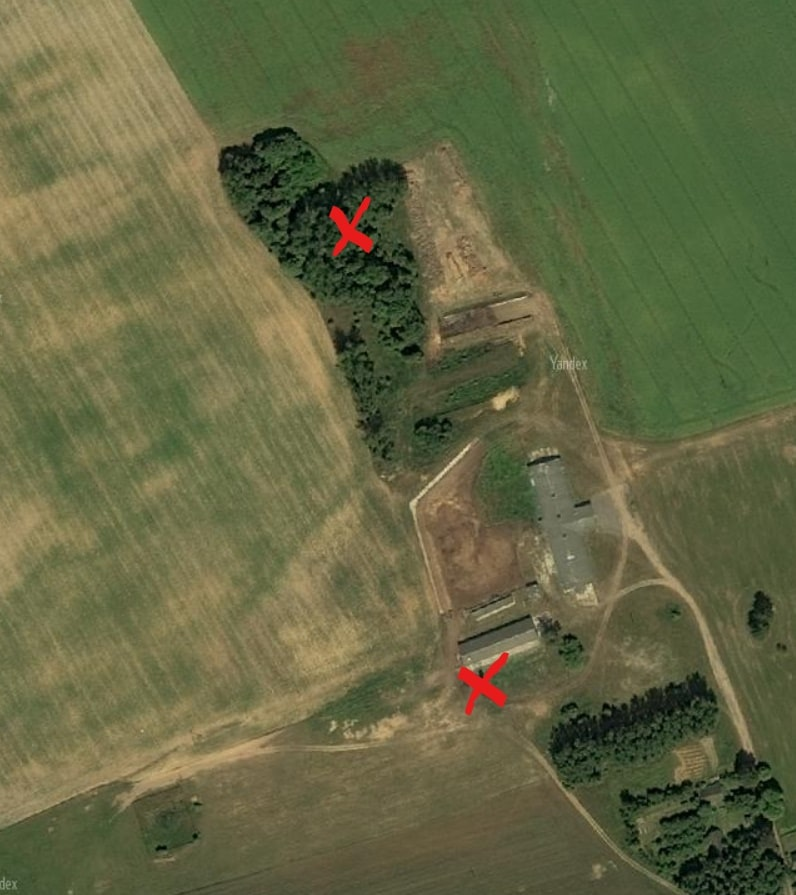

Картограф...
Введите текст найденной подсказки в поле ниже, для того что бы получить следующий знак.
Шаман послал вам карту, на которой он отметил две точки: где вы и где следующий знак, разберитесь и идите туда.
Найдите в пункте назначения то, что связано со смертью.
 Далее...